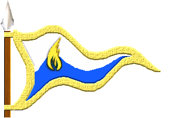
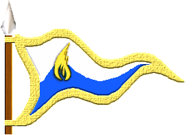

|

|
Das schwarze Brett
|
|
| Übersicht,
Anschläge und Stammtisch (RPG) |
|
Scherbenfußballpokal 444/445 (15  ) )
|
Sìn Mortiarea
  |
Wilde Vagabunden
Tor: Amhi (Ork)
Verteidigung: Cao (kräftiger Ork)
Mittelfeld: Cath (noch ein Ork) Lui (Orkin)
Angriff: Cea (Klabauterork)
Auswechselspieler: Cilli (Kakaoork)
Manschaftsheiler: Parion (Dunkelelf)
Lady Sìn Mortiarea
Zur 10. Stunde am 59.Blumenmond im Jahre 444 |
29.11.10 21:03
|
|
someone
  |
Lorderons Lederschützen
Tor: Muirgheal Gwlsdys (mannsweib, reaktion, menschin, kriegerin)
Verteidigung: Caomh Beagan (teamopa, stratege, mensch, zauberer)
Mittelfeld: some (schütze, ausdauer, halbelf, jäger), Eowebrimir Celil-Galdor (lulatsch, kopfbälle, elf, jäger)
Angriff: Cillcumhan Coille (sprinter, ballsicher, halbzwölf, jäger)
Auswechsler: Anant Cadel (glückspilz, flink, wichtelswicht, zauberer)
Mannschaftseilerin: Glór Belebrindil (schönheit, moralische unterstützung, elfin, heilerin)
Ritter someone,
Vorsteher von Baren-Amrun
Zur 13. Stunde am 59.Blumenmond im Jahre 444 |
29.11.10 21:47
|
|
| Misaki von der Gaukelbeere (RIP) |
Tor: Bilbo Speckteller- weiß alles hat aber keinen praktischen Plan
Verteidigung: Hertha Holzspeck Seefrau, weiß normalerweiße was sie tut
Mittelfeld:Cratosch Schädelspalter einziger Zwerg im Trupp, haut gern mal mit der Faust zu, und hat immer seinen Schmiedeschürze an, ist ruhig und überlegt
Angriff:Nils Faßvieh und Mobi Wurstvieh die beiden haben sich geschworen nie was allein zu machen, sind ein herz und eine Seele und die einzigen die das Spiel verstanden haben
Priesterin Misaki von der Gaukelbeere,
Priesterin im Dienste des einzig wahren Glaubens an Maki
Zur 15. Stunde am 59.Blumenmond im Jahre 444 |
29.11.10 22:08
|
|
| Aleja Noita (RIP) |
SC Melthron
Tor: Amiviel Eäradriethien (Elfin)
Abwehr: Mundra Anor (Elfin)
Abwehr: Pethien Belebrindil (Elfin)
Stürmerin: Legéwien Glin (Elfin)
Stürmer: Amithrariand Eäradriethien (Elf)
Auswechselspieler: Pethien Belebrindil (Elfin)
Aleja Noita
Zur 15. Stunde am 59.Blumenmond im Jahre 444 |
29.11.10 22:11
|
|
| Sareia Exitus (RIP) |
Tor: Eliowen Anawyn (Elfin)
Verteidigung die Zwillingsschwestern Maredud Cathmaol und Caomhiun Cathmaol (Menschin)
Mittelfeld: Sadhbha Coille (Wichtel)
Sturm: Doireann Moibeal (Wichtelin)
ewiger Ersatzspieler: Coed Creag (Wichtel)
Kardinälin Sareia Exitus,
Vorsteherin von Val en Orod,
Kardinälin im Dienste des einzig wahren Glaubens an Urvan,
Anführerin der glorreichen Nation "Wiege der Sonne",
Schönste Frau der Steppe,
Legionärin Urvans,
Ehefrau des ehrenwerten Meretán Exitus
Zur 19. Stunde am 59.Blumenmond im Jahre 444 |
29.11.10 23:03
|
|
Thor spinnt
  |
FC Golden Isle
Tor: Bengram Ehrenarm (Zwerg) Die 1,50m Krake
Abwehr: Seghal Rotschädel (Zwerg) Der Name ist Programm
Mittelfeld: Kalrugen Amboßhammer (Zwerg) Haut kräftig dazwischen. Der Typische Spielzerstörer.
Mittelfeld: Perilax Feuerschneide (Zwerg) Antreiber im Mittelfeld
Sturm: Xandaresch Stahlrücken (Zwerg) <- Torschützenkönig in der Vorbereitung, skrupellos im Abschluss. Kann einiges einstecken.
Bankdrücker: Cadel Cillin (Wichtel)
Baron Utkorg vant Leefdaalhof,
Vorsteher von Caer Valdeargh,
Legatus Legionis
Zur 24. Stunde am 61.Blumenmond im Jahre 444 |
30.11.10 11:25
|
|
| Taneron (RIP) |
FC Knickebein
Tor: Corbmac Maureen (Wichtel) kleiner Taugenichts der den Bällen eher ausweicht als fängt
Abwehr:Brann Cathasach (Wichtel) das einzige was er abwehrt ist Arbeit
Mittelfeld: Siubhan Cariadland (Wichtel) denkt das es sich bei Fußball um ne Kakaorunde hält und der Ball voll gestopft ist mit Kakao--> häufiges Handspiel beim ergreifen des vermeintlichen Kakao´s
Mittelfeld: Brann Cathasach (Wichtel) zählt die Grashalme anstatt Tore
Sturm: Cailean Fionnghuala (Wichtel) stürmt sehr gerne los jedoch vergisst sie manchmal in welche Richtung sie zu stürmen hat.
+ eine Ganze Horde von Kakaoschubsern beim zu schauen
ps.: Fauls werden direkt an den Larja Konvent weiter geleitet
Taneron
Zur 20. Stunde am 65.Blumenmond im Jahre 444 |
01.12.10 9:54
|
|
| sowas von egal (RIP) |
Die El Vengador`s schicken nur die besten
Tor: Amithrariand Lómilmamir(der name sagt alles)
Abwehr: Jette Butterspeck(elegant bringt jeden gegenspieler zum schmelzen)
Mittelfeld: Rudi Ochsenwolle (Ein Tier in Mittelfeld)
Angriff: Luke Faßnuss (Kopfballstark)
Devin Mac Kenzie
Zur 3. Stunde am 66.Blumenmond im Jahre 444 |
01.12.10 11:35
|
|
| Gandalf (RIP) |
Juventus Oceana schickt natürlich nur die die Besten aufs feld:
Tor Lómaralas Glarandel (da geht nichts mehr durch der hat fleissig trainiert)
Verteidigung: Nuitar Eisenbart und Dugulne Kriegsschlägel (mit den zwergen hinten kann nichts mehr schief gehen)
Angriff: Elvoniel Silmandil und Ceriand Eäril-Gandel (2 wieselflinke spieler vorne)
Edler Gandalf,
Vorsteher von Bergfriede,
Verlobter der reizenden Marianna lo Ilmarin
Zur 5. Stunde am 66.Blumenmond im Jahre 444 |
01.12.10 12:04
|
|
| Chevonne Siobhan (RIP) |
*Vor Sios geistigem Auge spielen die El Vengandors gegen die Wilden Vagabunden.* Wie lange die Orks wohl brauchen, um zu kapieren, dass nur die Kugel ohne Arme und Beine im Netz als Tor zählt?
Lady Siocán Siobhán,
Vorsteherin von Sigil,
Anführerin der glorreichen Nation "Orden der Sinne",
Schwester des 6. Grades
Zur 11. Stunde am 66.Blumenmond im Jahre 444 |
01.12.10 12:32
|
|
Lyra Callionymus
   |
1.Runde - Rückspiele
Sleipnirs stürmende Jäger - 1.FC Steppbär: 1:2(1:1)
SC Melthron - Wilde Vagabunden: 1:1(1:0)
Die Glücksjäger - SC Tinu eF: 1:1(0:0)
1,50 on Tour - Scharfler Drachentöter: 3:4(3:0)
El Vengador - Sigil Sentinels : 4:4(3:0)
Juventus Oceana - Incendium Firemages: 4:5(3:2)
TuSpo Seemannsgarn - Sportverein Sumpfia: 1:1(1:1)
Eukalyptische Schmauchkartoffeln - Eintracht Nordlicht: 1:1(1:0)
FC Knickebein - FC Bolz Arboretum: 2:2(1:2)
Fortuna Butterwiese - SFC Holzbein 404: 3:2(3:0)
1. Fußball-Legion - FC Petroleum Tannhausen: 4:6(0:4)
FC Golden Isle - VfB Grenzfeste: 3:2(0:2)
Sleipnirs stürmende Jäger 7-6-5-4-1-7
1.FC Steppbär 5-5-7-3-3-7
SC Melthron 7-3-4-1-5-10
Wilde Vagabunden 7-4-1-2-7-9
Die Glücksjäger7-2-10-0-1-10
SC Tinu eF 6-3-9-2-2-8
1,50 on Tour 9-8-9-1-2-1
Scharfler Drachentöter 4-4-8-4-7-3
El Vengador 7-7-7-3-3-3
Sigil Sentinels 3-7-2-8-1-9
Juventus Oceana 10-2-5-3-1-9
Incendium Firemages 0-0-10-10-5-5
TuSpo Seemannsgarn 5-9-2-4-6-4
Sportverein Sumpfia 5-5-5-5-5-5
Eukalyptische Schmauchkartoffeln 7-5-9-5-4-0
Eintracht Nordlicht 6-5-7-5-4-3
FC Knickebein 6-2-2-2-9-9
FC Bolz Arboretum 3-3-7-2-8-7
Fortuna Butterwiese 8-8-8-3-2-1
SFC Holzbein 404..5-3-7-7-3-5
1. Fußball-Legion 4-6-3-7-9-1
FC Petroleum Tannhausen 8-8-8-0-0-6
FC Golden Isle 1-3-3-3-10-10
VfB Grenzfeste 8-4-3-4-5-6
Freifrau Lyra Callionymus,
Vorsteherin von Schloss Tantopia
Zur 6. Stunde am 68.Blumenmond im Jahre 444 |
01.12.10 22:34
|
|
Lyra Callionymus
|
Die Auslosung für das Achtelfinale ergab folgende Paarungen:
Lorderons Lederschützen - Hafeninselbande
ALVERANS Allstars - Frostis
FC Petroleum Tannhausen - Sigil Sentinels
Sportverein Sumpfia - Incendium Firemages
FC Knickebein - Die Glücksjäger
1.FC Steppbär - FC Golden Isle
SC Melthron - Fortuna Butterwiese
Eukalyptische Schmauchkartoffeln - Scharfler Drachentöter
Die Hinspiele finden am Mittwoch, 08.Dezember und die Rückspiele am Mittwoch, den 15. Dezember jeweils ab 20 Uhr statt.
Freifrau Lyra Callionymus,
Vorsteherin von Schloss Tantopia
Zur 7. Stunde am 68.Blumenmond im Jahre 444 |
01.12.10 22:40
|
|
Sìn Mortiarea
|
Sollten wir sowas nochmal machen, werden wir wohl auch ein bisschen trainieren und nicht nur den weiblichen Schlachtenbummlern unsere ganze Aufmerksamkeit schenken.
Ich gratuliere Aleja Noita und wünsche ihr viel Erfolg für den Rest des Turniers.
Lady Sìn Mortiarea
Zur 7. Stunde am 68.Blumenmond im Jahre 444 |
01.12.10 22:46
|
|
Lyra Callionymus
|
^^bald ist ja wieder Blumenmond und dann geht es wieder von vorne los^^
Freifrau Lyra Callionymus,
Vorsteherin von Schloss Tantopia
Zur 8. Stunde am 68.Blumenmond im Jahre 444 |
01.12.10 22:50
|
|
| Aleja Noita (RIP) |
Ich danke Euch Sìn Mortiarea. Es war sehr spannend und ich bin sehr stolz auf meine Manschaft.
Sie haben sehr viel trainiert um weiter zu kommen.
Doch nun bin ich sehr gespannt gegen die Manschaft Fortuna Butterwiese.
Aleja Noita
Zur 8. Stunde am 68.Blumenmond im Jahre 444 |
01.12.10 22:56
|
|
| Eukal der Jeschmeidige (RIP) |
Eukalyptische Schmauchkartoffeln - Eintracht Nordlicht: 1:1(1:0)
Es war das Ereignis auf Kanubia! "Der Veit im Schmauchkessel", wie die Fäns das Spiel schon im Vorfeld getauft hatten. Oder haben sie nur immerzu laut den Namen des Rasenstutzerhalblings Veit von Pummel gerufen?
Ich weiß nicht mehr genau, schließlich bin ich im Vereinlokal direkt neben Eichhofen über einem zünftigen Bierchen eingeschlafen.
Meine, im Halbschlaf gebrummte, Taktikangabe an die Mannschaft war so simpel wie einfach, verhindert Tore und lasst möglichst wenig Tore zu!
In der ersten Halbzeit haben sie sich an die eine Angabe, in der zweiten Halbzeit dementsprechend an die andere Forderung gehalten.
Da derLange Johannes und Derschi Kraftifuß mit mir am Tisch eingeschlafen sind und Sol Sonnenschein nach einem Joint die meiste Zeit neben dem Tor schlief, haben eigentlich nur Onkel Kabumm und Gronz der Latrinentroll auf dem Spielfeld gestanden.
Onkel Kabumm schoß kurz vor Ende der ersten Halbzeit ein Tor, da er großen Hunger hatte und schnell was essen wollte. Das macht er noch immer, Halblinge haben einfach einen zu großen Appetit.
Gronz der Latrinentroll hielt den Kasten dicht, es war ihm aber irgendwann, so seine Aussage:" Alleyn zu fad. Gronz alleyn net mag Ballfangen!" Und so kam er zurück ins Vereinslokal.
Sol Sonnenschein hatte sich inszwischen vor das Tor gebettet und bemerkte in seinem Tiefschlaf nicht einmal, wie ihn die gegnerische Mannschaft immerzu anschoß.
Als er sich zur Seite drehte, kullerte aus Versehen ein Schuss ins Tor, was aber nicht weiter schlimm war.
Alles in allem ein Superspiel, wir bedanken uns bei der Eintracht Nordlicht und freuen uns auf die Scharfler Drachentöter.
Sir Eukal der Jeschmeidige,
Vorsteher von Haugesund,
Reisender Journalist der Taugenichtse,
Trainer der" Eukalyptischen Schmauchkartoffeln"
Zur 14. Stunde am 68.Blumenmond im Jahre 444 |
02.12.10 0:26
|
|
| Gandalf (RIP) |
MeineGlückwünsche gelten den Incendium Firemages mit ihrem Trainer Mendroga Hinwarth wenn auch die bessere mannschaft in einem glücklosen spiel unterlegen ist
Edler Gandalf,
Vorsteher von Bergfriede,
Verlobter der reizenden Marianna lo Ilmarin
Zur 18. Stunde am 70.Blumenmond im Jahre 444 |
02.12.10 12:28
|
|
| Ariana (RIP) |
ALVERANS Allstars
Tor: Delebriviel Celil-Gathien (Elfe, mit ihrem Nudelholz wehrt sie jeden Ball ab, der den Weg zum Tor sucht)
Abwehr: Belil-Gariand Anawyn (Elf, er ist ein wahres Bollwerk)
Abwehr: Cyl Elráril (Elf, er steht Belil in nicht´s nach)
Stürmerin: Thriowiel Glarandel (Elfe, sie ist meine Geheimwaffe)
Stürmerin: Sérith Celil-Gathien (Elfe, auch sie ist kaum aufzuhalten)
Auswechselspielerin: Beloniel Lómólith (Elfe, in der Ruhe liegt die Kraft)
Dieses ist meine Mannschaft und ich werde mich jetzt mit ihr zusammen in ein geheimes Trainingslager zurückziehen
Weise Ariana Gil Armarth,
Vorsteherin von ALVERANS Lotusblüte
Zur 14. Stunde am 74.Blumenmond im Jahre 444 |
03.12.10 9:52
|
|
Mendroga Hinwarth
  |
Vielen Dank für 2 super spannende Spiele an die Mannschaft von Gandalf und die freundlichen Glückwünsche.
Gegenüber der ersten Runde muss Alain Bhaird (Halborkin Abwehr) das Feld verlassen. Für sie kommt Amárion Galán in die Startformation:
1. Aonghus Cain im Tor (Halbork) - mit Riesenhänden versucht er sein Glück
2. Cadrim Rotschlägel als Libero (Zwerg) - stets rotgefährdet durch heftige und rücksichtslose Abwehrarbeit
3. Moya Siobhan als Spielmacherin (Halborkin) - Überblick braucht sie nicht, da sich kaum jemand in ihre Nähe traut
4. Bain Coinneach als Mittelstürmer (Halbork) - Bewegung Fehlanzeige, aber immer richtig stehen und einfach drauf, Bälle mit höchstgeschwindigkeit, die auch schon mal durch die Maschen schlagen
5. Amárion Galán Stürmer (Elfenmagier) - kann es nicht lassen, die Bälle wie Feuerbälle aussehen zu lassen, so dass die Torleute lieber die Finger weg nehmen, als sich diesen in den Weg zu werfen
6. Lómaralas Glin als Joker (Elf) - wenn die Abwehr nicht hält, muss er sie mit Feuer- oder Eiswänden verstärken
Die Fans der Incendium Firemages freuen sich auf die nächste Runde und weitere spannende Spiele gegen den Sportverein Sumpfia unter der Leitung von Misaki von der Gaukelbeere und Bilbo Speckteller. Die Schiffe nach Troja sind startbereit.
Pfalzgraf Mendroga Hinwarth,
Vorsteher von Incendium Gondoria,
Anführer der glorreichen Nation "Die Erben der Gondorias"
Zur 16. Stunde am 75.Blumenmond im Jahre 444 |
03.12.10 15:58
|
|
Lyra Callionymus
|
1.Runde - Rückspiele:
Sleipniers stürmende Jäger begannen schwungvoll und gingen 1:0 in Führung. Dann jedoch drehte der 1.FC Steppbär richtig auf und das Team von Sareia Exitus erreichte sicher das Halbfinale.
SC Melthron, die das Hinspiel bei den Wilden Vagabunden 2:1 gewonnen hatten, taten sich zuhause recht schwer.
Zwar ging das Team von Aleja Noita 1:0 in Führung doch begannen die Wilden Vagabunden dann einen regelrechten Ballzauber, welcher aber nur zum Ausgleich reichte und sie nach gutem Spiel ausschieden.
Ebenfalls 1:1 spielten Maighdean Mharas Glücksjäger gegen SC Tinu eF. Wegen der auswärts mehr erzielten Toren erreichten siedas Achtelfinale.
Dies traf auch auf die Eukalyptischen Schmauchkartoffeln von Eukal zu, die ein schlappes 1:1 gegen Eintracht Nordlicht in einem sehr taktisch geprägten Spiel ermauerten.
Sehr bitter schied Devin Mac Kenzie aus dem Tunier aus.
Seine Truppe El Vengador war in der ersten Halbzeit klar überlegen. Doch dann kamen Sigil Sentinels wie verwandelt aus der Kabine und schafften mit dem Schlußpfiff das 4:4.
Jascha Holzfuß machte so weiter, wie er das letzte Spiel aufhörte. Seine 1,50 führet 3:0 zur Pause (ein Tor zu wenig für das Elfmeterschiessen) und in Halbzeit 2 bewieß Larin Stealtskull
mit ihren Scharfler Drachentötern, das sie Jascha dieses Spiel einst lehrte und gewann 4:3.
Misaki von der Gaukelbeere reichte mit SV Sumpfia ein 1:1 bei TuSpo Seemannsgarn.
Juventus Oceana führte schnell mit 3:0 aber mußte sich am Ende in einem sehr packenden Spiel mit 4:5 gegen die überlegenen Incendium Firemages von Mendroga Hinwarth aus dem Tunier verabschieden.
Nach dem 3:3 im Hinspiel bei FC Bolz Arboretum reichte Tanerons FC Knickebein ein 2:2 im Rückspiel auf eigenem Platz gegen die Truppe von Wolf ni Volon.
FC Golden Isle gemann auch das Rückspiel knapp gegern VFB Grenzfese und so erreichte der Neuling von Utkorg vant Leefdaalhof sicher das Achtelfinale.
Fortuna Butterwiese gewann 3:2 gegen SFC Holzbein 404 und so sieht sich die Mannschaft von TATARS ebenfalls in der nächsten Runde.
In einem sehr torreichen Spiel gewannen die Tannhäuser 6:4 bei der 1.Fußball-Legion und wir beglückwünschen Wurzelsepps Exilelf in den nächsten beiden Spielen.

1.Runde - Rückspiele:
Sleipnirs stürmende Jäger - 1.FC Steppbär: 1:2(1:1)
SC Melthron - Wilde Vagabunden: 1:1(1:0)
Die Glücksjäger - SC Tinu eF: 1:1(0:0)
1,50 on Tour - Scharfler Drachentöter: 3:4(3:0)
El Vengador - Sigil Sentinels : 4:4(3:0)
Juventus Oceana - Incendium Firemages: 4:5(3:2)
TuSpo Seemannsgarn - Sportverein Sumpfia: 1:1(1:1)
Eukalyptische Schmauchkartoffeln - Eintracht Nordlicht: 1:1(1:0)
FC Knickebein - FC Bolz Arboretum: 2:2(1:2)
Fortuna Butterwiese - SFC Holzbein 404: 3:2(3:0)
1. Fußball-Legion - FC Petroleum Tannhausen: 4:6(0:4)
FC Golden Isle - VfB Grenzfeste: 3:2(0:2)
Freifrau Lyra Callionymus,
Vorsteherin von Schloss Tantopia
Zur 4. Stunde am 83.Blumenmond im Jahre 444 |
05.12.10 10:03
|
|
| Iga Pelogran (RIP) |
Ich möchte mich auch nochmals bei der TUrnierleitung für die Ausrichtung bedanken. Bitte setzt nächstes Jahr ordentliche Schiris ein.
Hohepriesterin Iga Pelogran,
Vorsteherin von Ausgrabungsstätte Nordlicht,
Hohepriesterin im Dienste des einzig wahren Glaubens an Larja
Zur 6. Stunde am 83.Blumenmond im Jahre 444 |
05.12.10 10:29
|
|
| Aleja Noita (RIP) |
SC Melthron
Tor: Amiviel Eäradriethien (Elfin)
Abwehr: Mundra Anor (Elfin)
Abwehr: Pethien Belebrindil (Elfin)
Stürmerin: Legéwien Glin (Elfin)
Stürmer: Amithrariand Eäradriethien (Elf)
Auswechselspielerin: Pethien Belebrindil (Elfin)
Edle Aleja Noita
Zur 12. Stunde am 3.Erntemond im Jahre 444 |
07.12.10 19:58
|
|
Lyra Callionymus
|
Achtelfinale - Hinspiele:
ALVERANS Allstars - Frosis: 4:3(3:2)
1.FC Steppbär - FC Golden Isle: 1:1(0:1)
SC Melthron - Fortuna Buterwiese: 4:4(0:4)
FC Petroleum Tannhausen - Sigil Sentinels: 2:4(1:2)
Lorderons Lederschützen - Hafeninselbande: 1:1(1:1)
Sportverein Sumpfia - Incendium Firemages: 3:2(2:0)
FC Knickebein - Die Glücksjäger: 0:9(0:4)
Eukalyptische Schmauchkartoffeln - Scharfler Drachentöter: 3:4(2:1)
ALVERANS Allstars 7-10-1-2-9-1
Frostis 5-5-6-6-6-2
1. FC Steppbär 2-2-6-6-7-7
FC Golden Isle 1-1-10-5-5-8
SC Melthron 1-5-4-10-7-3
Fortuna Butterwiese 7-7-7-7-1-1
FC Petroleum Tannhausen 5-5-5-5-5-5
Sigil Sentinels 7-1-7-7-1-7
Lorderons Lederschützen 5-4-6-4-4-7
Hafeninselbande 8-3-3-5-4-7
Sportverein Sumpfia 6-4-4-6-8-2
Incendium Firemages 4-4-2-2-8-10
FC Knickebein 0-0-0-0-0-0
Die Glücksjäger 5-0-5-3-7-10
Eukalyptische Schmauchkartoffeln 4-8-4-2-4-8
Scharfler Drachentöter 6-3-3-7-7-4
Lady Lyra Callionymus,
Vorsteherin von Schloss Tantopia
Zur 4. Stunde am 8.Erntemond im Jahre 444 |
08.12.10 21:57
|
|
someone
|
Lorderons Lederschützen - Hafeninselbande: 1:1(1:1)
Heute war es in Lorderon windig und frisch. Das als Spielfeld fungierende Feld vor der Stadtmauer war noch feucht und bis auf die Spieler und einige Bürger nicht groß besucht. Die Hafeninselbande wartete bereits auf dem Spielfeld, als wir uns allmählich dort einfanden. Während wir uns erstmal begrüßten und uns über die Bande lustig machten, ertönte der anpfiff und ehe wir uns richtig gesammelt hatten, viel auch schon das 0:1, welches wir um jeden preis zu vermeiden gedachten.
Ein Schock!
Ab diesem Moment waren wir hellwach und hielten den Ball spielerisch unter kontrolle. Nur, dass es uns an einem vernünftigen Abschluss fehlte...
gegen Ende der ersten Halbzeit gelang es dann Coille in einem günstigen Moment im einzelgang nach vorne zu preschen und den Ball unhaltbar zielgenau in die rechte obere Ecke zu schießen.
Danach achteten wir nurnoch darauf die Bande nicht mehr an den Ball kommen zu lassen, was sich als laufintensive aber lösbare Aufgabe zeigte. Dies wiederum, ließ die zweite halbzeit recht einseitig und langweilig erscheinen. Mit dem Schlusspfiff stand es also immernoch 1:1, womit wir fürs erste auch zufrieden sind. zuversichtlich freuen wir uns auf das Rückspiel in Lois Thuatail und bedanken uns für ein gelungenes Spiel in unserer Heimatstadt.
Ritter someone,
Vorsteher von Baren-Amrun
Zur 6. Stunde am 8.Erntemond im Jahre 444 |
08.12.10 22:24
|
|
| Iga Pelogran (RIP) |
Da Knickebein nun aussichtslos ausgeschieden ist, biete ich an, das Rückspiel bei den Glücksjägern anzutreten. Eine Art Freundschaft/Testspiel. Damit die Glücksjäger nicht wieder alleine auf dem Platz stehen und damit sie laufen MÜSSEN. Sonst hätten Sie ja im Viertelfinale einen konditionellen Vorteil den anderen Teams gegenüber.
Hohepriesterin Iga Pelogran,
Vorsteherin von Ausgrabungsstätte Nordlicht,
Hohepriesterin im Dienste des einzig wahren Glaubens an Larja
Zur 20. Stunde am 9.Erntemond im Jahre 444 |
09.12.10 7:22
|
|
Lyra Callionymus
|
Ich hoffe trotzdem sehr, das der FC Knickebein noch antritt. Aber sicher, alle ausgeschiedenen Mannschaften können mir gerne Spielscheine schicken. Freundschaftspiele kann ich etwas zeitversetzt, also etwas früher als die normalen Spiele, anpfeifen. Dadurch wäre sichergestellt, dass gern gesehene Zuschauer auch die weiteren Pokalbegegnungen verfolgen. Also immer her mit Spielscheinen, werte Bolz Arboretum, Wilde Vagabunden, Juventus Oceana und wie sie alle heißen!
Lady Lyra Callionymus,
Vorsteherin von Schloss Tantopia
Zur 21. Stunde am 11.Erntemond im Jahre 444 |
09.12.10 18:48
|
|
Lyra Callionymus
|
Achtelfinale - Hinspiele:
Neben den 12 Mannschaften, welche sich aus der ersten Runde qualifiziert hatten, begannen nun auch jene vier Vereine, denen ein Freilos zugelost worden war.
Wie es der Zufall so wollte, trafen sie in direkten Duellen aufeinander. Die ALVERANS Allstars legten mächtig vor und führten schon 3:0 gegen die Frostis. Dann jedoch drehten diese den
Spieß um und glichen bis auf 3:3 aus, ehe jedoch die Mannschaft der ALVERANER kurz vor dem Ende das vielumjubele 4:3 erziele.
Die zweite Partie der Neulinge endete 1:1. Zunächst ging die Hafeninselbande 1:0 in Führung, kurz vor der Pause glichen Lorderons Lederschützen aus. In der zweiten Hälfte schien es so, als wären beide mit dem Unendschieden einverstanden.
TATARS Fortuna Butterwiese überrannte förmlich den SC Melthron und führte schon sehr schnell mit 4:0. Doch dann bewies Aleja Noita ihre Fähigkeiten als Motivationskünstlerin und brachte ihre Damenmannschaft dazu, in der zweiten Spielhälfte ein
4:4 Unendschieden zu erspielen.
FC Petroleum Tannhausen schwächelte ebenfalls in der ersten Hälfte gegen die überlegenen Sigil Sentinels, welche ein sehr sehr gutes Spiel machten und beim verdienten 4:2 Auswärtssieg eine Welle der Begeisterung auslösten, die selbstverständlich
an den heimischen Schlachtenbummlern aus Tannhausen vorbeischwappte.
Zu einem sehr hohen Auswärtssieg kamen die Glücksjäger von Maighdean Mhara bei Tanerons FC Knickebein, dessen Spieler wie Statisten auf dem Spielfeld umhergeisterten und am Ende froh sein konnten, nicht zweistellig verloren zu haben. Neun Tore waren es am Ende.
Ein sehr spannendes Spiel lieferten sich die Eukalyptischen Schmauchkartoffeln gegen die Scharfler Drachentöter. Die 1:0 Führung von Larin Stealthkulls Team konnte Eukal der Jeschmeidige vor der Pause in eine 2:1 Führung drehen. Das wiederum gefiel den Drachentötern wenig, so das sie
nach der Pause 3 Tore schossen und wieder 4:2 führten, ehe die Schmauchkartoffeln ihrerseits eine Aufholjagt begannen, welche jedoch nach dem 3:4 Anschlußtreffer für sie unglücklich endete.
SV Sumpfia spielte brilliant. So dominierte der Sportverein die erste Hälfte deutlich und zauberte zu Beginn der zweiten Hälfte immernoch. So ab der siebzigsten Minute jedoch traten konditionelle Schwächen auf.
Das gut durchtrainierte Team der Incendium Firemages konnte dies nutzen und am Ende ein 3:2 erkämpfen, welches Hoffnungen auf ein weiterkommen im Rückspiel zuläßt.
Ein gutes 1:1 sprang bei der Partie 1.FC Steppbär gegen FC Golden Isle heraus. Die Zuschauer sahen packenden Angriffsfußball und hervorragende Torhüter.
Achtelfinale - Hinspiele:
ALVERANS Allstars - Frosis: 4:3(3:2)
1.FC Steppbär - FC Golden Isle: 1:1(0:1)
SC Melthron - Fortuna Buterwiese: 4:4(0:4)
FC Petroleum Tannhausen - Sigil Sentinels: 2:4(1:2)
Lorderons Lederschützen - Hafeninselbande: 1:1(1:1)
Sportverein Sumpfia - Incendium Firemages: 3:2(2:0)
FC Knickebein - Die Glücksjäger: 0:9(0:4)
Eukalyptische Schmauchkartoffeln - Scharfler Drachentöter: 3:4(2:1)
Lady Lyra Callionymus,
Vorsteherin von Schloss Tantopia
Zur 8. Stunde am 20.Erntemond im Jahre 444 |
11.12.10 18:16
|
|
Lyra Callionymus
|
Achtelfinale - Rückspiele:
Frostis - ALVERANS Allstars: 3:3(3:0)
FC Golden Isle - 1.FC Steppbär: 3:4(0:3)
Fortuna Butterwiese - SC Melthron: 2:2(0:2)
Sigil Sentinels - FC Petroleum Tannhausen: 2:3(0:3)
Hafeninselbande - Lorderons Lederschützen: 3:4(1:2)
Incendium Firemages - Sportverein Sumpfia: 5:5(0:5)
Die Glücksjäger - 1.FC Knickebein: 7:0(5:0)
Scharfler Drachentöter - Eukalyptische Schmauchkartoffeln: 2:2(2:1)
Frostis 7-1-7-7-1-7
ALVERANS ALLSTARS 6-9-10-3-1-1
FC Golden Isle 1-3-3-3-10-10
1.FC Steppbär 7-2-6-6-7-2
Fortuna Butterwiese 2-2-10-10-3-3
SC Melthron 7-3-10-4-4-2
Sigil Sentinels 1-1-7-7-7-7
FC Petroleum Tannhausen 7-3-7-3-7-3
Hafeninselbande 4-3-7-5-2-9
Lorderons Lederschützen 3-10-3-5-9-0
Incendium Firemages 0-0-0-10-10-10
SV Sumpfia 7-5-3-3-5-7
Die Glücksjäger 10-2-7-0-1-10
FC Knickebein 0-0-0-0-0-0
Scharfler Drachentöter 4-4-9-2-4-7
Eukalyptische Schmauchkartoffeln 4-8-4-4-4-6
Freifrau Lyra Callionymus,
Vorsteherin von Schloss Tantopia
Zur 6. Stunde am 38.Erntemond im Jahre 444 |
15.12.10 22:33
|
|
Lyra Callionymus
|
Die Auslosung für das Achtelfinale ergab folgende Paarungen:
Sportverein Sumpfia - Die Glücksjäger
Lorderons Lederschützen -Scharfler Drachentöter
ALVERANS Allstars - 1.FC Steppbär
Sigil Sentinels - Fortuna Butterwiese
Freifrau Lyra Callionymus,
Vorsteherin von Schloss Tantopia
Zur 6. Stunde am 38.Erntemond im Jahre 444 |
15.12.10 22:34
|
|
| Iga Pelogran (RIP) |
Kannst Du auch die Zahlen der Freundschaftsspiele dokumentieren? Wäre Superfein
Hohepriesterin Iga Pelogran,
Vorsteherin von Ausgrabungsstätte Nordlicht,
Hohepriesterin im Dienste des einzig wahren Glaubens an Larja
Zur 7. Stunde am 38.Erntemond im Jahre 444 |
15.12.10 22:36
|
|
Lyra Callionymus
|
Freundschaftsspiele:
1,50 on Tour - Juventus Oceana: 4:4(3:0)
FC Bolz Arboretum - Wilde Vagabunden: 2:2(1:1)
Eintracht Nordlicht - Sleipnirs stürmende Jäger: 1:1(0:1)5:4n.E.
Elfmeterschießen:
SsJ schießt rechts, Torwart hält 1:1
EN schießt links, Torwart wirft sich nach rechts, Tor! 2:1
SsJ schießt in die Mitte, Torwart wirft sich nach rechts, Tor! 2:2
EN schießt links, Torwart bleibt stehen, Tor! 3:2
SsJ schießt links am Tor vorbei! 3:2
EN schießt links, Tor! 4:2
SsJ schießt Mitte, Tor! 4:3
EN schießt links, gehalten! 4:3
SsJ schießt links, Tor! 4:4
EN schießt links, Tor! 5:4
1,50 on Tour 6-4-6-4-6-4
Juventus Oceana 6-2-1-10-2-9
FC Bolz Arboretum 4-2-8-4-4-8
Wilde Vagabunden 4-4-6-4-6-6
Eintracht Nordlicht 0-4-2-8-8-8
Sleipnirs stürmende Jäger 3-3-3-7-5-9
Sleipniers stürmende Jäger
Schüsse: R-M-LJ-MJ-L---L-M-M-R-R-L
Torwart: R-M-JM-L-R---R-L-M-R-M-R
Eintracht Nordlicht
Schüsse: L-L-L-L-L---L-L-L-L-L-L
Torwart: RJ-RJ-RJ-R-R---R-R-R-R-R-R
Freifrau Lyra Callionymus,
Vorsteherin von Schloss Tantopia
Zur 7. Stunde am 38.Erntemond im Jahre 444 |
15.12.10 22:45
|
|
someone
|
Hafeninselbande - Lorderons Lederschützen: 3:4(1:2)
Das heitere Wetter spiegelte heute die gesamte Stimmung auf dem Platz in Lois Thuatail wieder. Beide Mannschaften waren von Anfang an voll dabei und die Spielrichtung wechselte ständig hin und her. Das erste Tor fiel schon recht früh, und ging auf Kosten des heute nicht ganz wachen Verteidigers Caom Beaghan und einer Glanzleistung des Stürmers der Bande.
Nach ihrer frühen Führung, schalteten die Spieler der Hafeninselbande einen Gang runter und wir steigerten das Tempo noch etwas. Der Ausgleich ließ nicht lange auf sich warten und kurz vor Ende der zweiten Halbzeit konnten wir noch ein Tor nachlegen.
In der zweiten Halbzeit schien den Gegner der Mut verlassen zu haben. Jedenfalls hatten wir nun viel Raum und Zeit, was uns erlaubte ein Traumhaftes Tor zu Zaubern. Ich spielte einen hohen langen Ball auf Coille, welcher etwas abseits stand, den Ball entgegen nahm und mit wenigen Schritten direckt vor dem Tor stand. Mit einem kühnen Schuss zwischen den Beinen des Torwarts hindurch stellte er den Torwart blos, welcher wenige min. später, als der Torjubel der Fans noch nicht verhallt war, noch immer ganz verunsichert war, was ich wiederum eiskalt aus nutze um mit dem 4:1 unseren Sieg zu besiegeln.
Doch während Coille, Eowebrimir und ich schon am Spielfeldrand unseren Sieg mit Rum begossen musste die arme Muri welche nur noch mit dem wechselwichtel Anant Cadel und dem schläfrigen Caomh auf dem Felde stand, mit dem 4:2, feststellen, dass die Hafeninselbande kurz vor Schluss sich immernoch nicht aufgegeben hatte. Im Gegenteil unser Gegner lieferte plötzlich wieder ein beeindruckendes Spiel und setzte schließlich in der letzten Minute gegen mittlerweile wieder 5 Mann (bzw. 4mann und eine frau) mit dem 4:3 zumindest ein deutliches Zeichen.
Respekt also, vor dem Kampfgeist dieses Gegners, welchen man besser nicht unterschätzen sollte!
Ritter someone,
Vorsteher von Baren-Amrun
Zur 9. Stunde am 38.Erntemond im Jahre 444 |
15.12.10 23:04
|
|
| Eukal der Jeschmeidige (RIP) |
Scharfler Drachentöter - Eukalyptische Schmauchkartoffeln: 2:2(2:1)
Die Schmauchkartoffeln waren aufs höchste motiviert. Als das beste Team der Scherbe hatten sie mehr als nur einen guten Ruf zu verlieren.
Nach einer langen Reise erreichten wir die Insel Drachenbrundel, wo wir uns für die Heimspielniederlage revanchieren wollten.
Vom Gegner keine Spur. Auch gab es auf diesem kleinen Eiland keinerlei Ballfeld. Wir warteten noch ein wenig ab und als sich die Scharfler Drachentöter aus lauter Furcht nicht blicken ließen, luden dann einige Bekannte für eine dicke Sause auf dieser Insel ein. Gefeiert wurde das Weiterkommen des besten Teams der Scherbe, sowie der Geburtstag von Gronz dem Toilettentroll. Er ist 2 geworden.
Nach 3 Tagen verließen wir Drachenbrundel und fuhren zurück nach Eichhofen. Witwe Haudruffdekopp, Halborkin und ältester Fän der Eukalyptischen Schmachkartoffeln empfing uns sehr traurig.
"Schade, dass Ihr ausgeschieden seid. ich habe Euch zum Trost einen Blutwurstkuchen gebacken!"
"Ausgeschieden? Das andere Team erschien nie auf Drachenbrundel. Wir haben gewonnen!" tröstete ich die feine Witwe.
"Drachenbrundel? Ihr solltet doch nach Drachenbrandung!", kam ein schlauer Einwurf aus der Menge der vielen weiblichen Fäns.
Schlagartig fiel es uns wie Tomaten von den Ohren. Kein Spielfeld. Kein Team. Keine Stadt! Wir waren auf der falschen Insel!
Oh Schreck... wir warfen ein Blick in die Zeitung und tatsächlich: Scharfler Drachentöter - Eukalyptische Schmauchkartoffeln: 2:2(2:1) stand es dort in fetten Lettern gedruckt. Das beste Team der Scherbe würde nun erst nächste Saison Gelegenheit haben den Titel zu verteidigen!
Aber... Halt Moment. Wenn wir gar nicht dort waren. Wer hat dann 2 Tore für uns geschossen?
Sir Eukal der Jeschmeidige,
Vorsteher von Haugesund,
Reisender Journalist der Taugenichtse,
Trainer der" Eukalyptischen Schmauchkartoffeln"
Zur 4. Stunde am 42.Erntemond im Jahre 444 |
16.12.10 20:28
|
|
Thor spinnt
|
FC Golden Isle - 1.FC Steppbär: 3:4(0:3)
--------------
Der FC Golden Isle trat zunächst ohne seinen Trainer an. Utkorg war noch in der Kabine geblieben und verging sich an den neu eingetroffenen Joints, mit denen er eigentlich die Mannschaft dopen wollte.
Kurz nach Beginn der 2. Halbzeit betrat er die Seitenlinie und staunte nicht schlecht, als es bereits 0:4 stand.
Sofort wurden erste Sofortmaßnahmen eingeleitet und Erfrischungstränke gereicht. Diese zeigten bei Perilay Feuerschneide die größte Wirkung. Konnte er im Alleingang doch auf 4:4 aufschließen.
Das letzte magere Törchen wollte dann aber doch nicht fallen, so dass man sich erhobenen Hauptes vom Turnier verabschieden musste.
Sir Utkorg vant Leefdaalhof,
Vorsteher von Caer Valdeargh,
Legatus Legionis
Zur 8. Stunde am 49.Erntemond im Jahre 444 |
18.12.10 12:35
|
|
Thor spinnt
|
3:4 natürlich
Sir Utkorg vant Leefdaalhof,
Vorsteher von Caer Valdeargh,
Legatus Legionis
Zur 8. Stunde am 49.Erntemond im Jahre 444 |
18.12.10 12:36
|
|
Lyra Callionymus
|
Achtelfinale - Rückspiele
Da ALVERANS Allstars das Hinspiel knapp mit 4:3 gewonnen hatten, gaben die Frostis im Rückspiel alles. Es begann ziemlich gut für sie und beim Pausentee sah es beim Stande von 3:0 optimal aus. Doch dann kamen die Allstars wie verwandelt aus der Kabine und erkämpften ein 3:3, wodurch die ALVERANER nun im Viertelfinale stehen.
Der 1.FC Steppbär konnte beim 1:1 im Hinspiel nicht allzusehr überzeugen. Deshalb galt der FC Golden Isle eher als Favorit. Doch diesmal gab sich das Team von Sareia Exitus keine Blöße und dominierte deutlich die ersten 60 Minuten des Spiels. 4:0 lag man auswärts in Führung doch dann erwachte urplötzlich die Mannschaft von Utkorg vant Leefdaalhof und ehe die vielen Zuschauer begriffen stand es plötzlich 3:4. Die Stimmung tobte und der Ausgleich lag förmlich in der Luft. Aber es hat nicht sollen sein. Ein schriller Pfiff des Schidsrichters beendete die letzten Hoffnungen auf ein weiterkommen für den FC Golden Isle.
Der SC Melthron hatte beim Heimspiel gegen Fortuna Butterwiese ja aus einem 0:4 zur Pause noch ein 4:4 erkämpft. Nun galt es, in Butterwiese möglichst viele Tore zu schießen und auf keinen Fall zu verlieren. So rannten die Damen von Aleja Noita auch sehr zielbewußt auf den Platz und schossen gleich zwei Tore. Doch bis zur Pause wollte kein weiteres gelingen. Verzweifelt versuchten sie alle möglichen Tricks. In der zweiten Hälfte gelang Fortuna Butterwiese ebenfalls ein Doppelschlag zum 2:2. Aufgrund der auswärts mehr erzielten Tore in Melthron erreichte der inoffizielle Meister aus der nie beendeten ersten Scherbenligasaison Fortuna Butterwiese das Viertelfinale und der SC Melthron schied ungeschlagen aus dem Tunier aus.
Lorderons Lederschützen, welche beim 1:1 im Hinspiel gegen die Hafeninselbande ein wenig wie eine Altherrentruppe aussahen, bewiesen nun im Rückspiel, das mit ihnen noch durchaus zu rechnen sein kann. Bis zur achzigsten Minute stand es bereits 4:1 und dann begannen die Spieler noch während des Spiels, an der Seitenlinie Autogramme zu schreiben. Dies nutze die Hafeninselbande, um auf 3:4 zu verkürzen. Doch dann war das Spiel vorbei und Lorderon jubelte.
Sportverein Sumpfia hatte beim 3:2 gegen Incendium Firemages im Hinspiel durch schönes Spiel überzeugt. Nun ging der Zauber weiter, begleitet von den pfiffen der heimischen Fans jonglierten die Sumpfianer mit den Bällen. Die wenigen mitgereisten Anhänger trommelten dazu so das es ein wahrer Augen- und Ohrenschmaus war, dem beizuwohnen, solange man nicht für die Firemages hielt, denn zur Pause lag die Heimmannschaft sage und schreibe mit 0:5 im Rückstand. Mit lauten buuuuh-Rufen schlichen sie sich in die Kabine und dann waren einige dumpfe Schläge zu hören. Was dann folgte, hat es in der Form noch nie gegeben. In Halbzeit zwei wurde um jeden Ball gekämpft und die Sumpfianer zogen ein um das andere Mal die Beine zurück damit sie nicht gebrochen werden, denn die Incendium Firemages wirkten nun wie hungrige Raubtiere. Dem 1:5 folgte das 2:5 und dem 2:5 das 3:5 und dem 3:5 das 4:5 und dem 4:5 das 5:5 und dem 5:5 der Schlusspfiff. Am Ende gab es stehenden Applaus für die Heimmannschaft, obwohl sie aus dem Tunier ausschied.
Die Partie zwischen FC Knickebei und den Glücksjägern war eigentlich schon nach dem klaren 9:0 Sieg für die Mannschaft von Maighdean Mhara entschieden. Auch im Rückspiel hagelte es Gegentore für Knickebein und so zogen die Glücksjäger nach dem 7:0 im Rückspiel glasklar in das Viertelfinale ein.
Die Scharfler Drachentöter hatten das Hinspiel bei den Eukalyptischen Schmauchkartoffeln 4:3 gewonnen. Im Rückspiel waren beide Mannschaften gleich stark und es endete 2:2. Larin Stealthskulls Drachentöter dürfen sich auf die nächste Runde freuen, während Eukal der Jeschmeidige bestreitet, überhaupt dagewesen zu sein.
FC Petroleum Tannhausen hatte das Heimspiel gegen Sigil Sentinels mit 2:4 verloren. Wurzelsepps Exilelf gab sich jedoch keineswegs geschlagen. Sie spielten herzerfrischenden Fußball und führten zur Pause mit 3:0 in Sigil. Siocán Siobhán mußte bangen. In diesem Moment waren sie ausgeschieden. Das 0:4 lag in der Luft. Tannhausen belagerte das heimische Tor. Ein Konter bescherte das 1:3. Zu diesem Zeitpunkt wäre Sigil wieder weiter. Tannhausen gab weiterhin alles. Ein Tor nur und alles wäre wieder anders. Mit dem Schlusspfiff fiel dann das 2:3 und Tannhausen fehlte am Ende ein Tor für ein Elfmeterschießen.
Achtelfinale - Rückspiele (in [] stehen die Hinspielergebnisse):
Frostis - ALVERANS Allstars: 3:3(3:0) [3:4(2:3)]
FC Golden Isle - 1.FC Steppbär: 3:4(0:3) [1:1(1:0)]
Fortuna Butterwiese - SC Melthron: 2:2(0:2) [4:4(4:0)]
Sigil Sentinels - FC Petroleum Tannhausen: 2:3(0:3) [4:2(2:1)]
Hafeninselbande - Lorderons Lederschützen: 3:4(1:2) [1:1(1:1)]
Incendium Firemages - Sportverein Sumpfia: 5:5(0:5) [2:3(0:2)]
Die Glücksjäger - 1.FC Knickebein: 7:0(5:0) [9:0(4:0)]
Scharfler Drachentöter - Eukalyptische Schmauchkartoffeln: 2:2(2:1) [4:3(1:2)]
Im Viertelfinale erwartet der Sportverein Sumpfia nun Die Glücksjäger, Lorderons Lederschützen müssen gegen die Scharfler Drachentöter ran, ALVERANS Allstars dürfen sich auf dem FC Steppbär freuen und Sigil Sentinels ist der nächste Verein, der versuchen wird, die Favoriten aus Butterwiese zu stoppen.
Freifrau Lyra Callionymus
Zur 7. Stunde am 74.Erntemond im Jahre 444 |
24.12.10 8:24
|
|
Lyra Callionymus
|
Viertelfinale - Hinspiele:
Sportverein Sumpfia - Die Glücksjäger: 3:4(0:3)
Lorderons Lederschützen - Scharfler Drachentöter: 2:2(1:1)
ALVERANS Allstars - 1.FC Steppbär: 3:3(2:1)
Sigil Sentinels - Fortuna Butterwiese: 3:3(2:2)
Sportverein Sumpfia 2-8-3-7-4-6
Die Glücksjäger 5-10-5-3-7-0
Lorderons Lederschützen 3-6-5-5-5-6
Scharfler Drachentöter 4-3-8-2-5-8
ALVERANS Allstars 7-3-7-3-7-3
1.FC Steppbär 1-6-6-6-5-6
Sigil Sentinels 0,7,8,0,7,8
Fortuna Butterwiese 3-2-10-3-3-9
Lyra Callionymus
Zur 3. Stunde am 8.Dunkelfrost im Jahre 444 |
29.12.10 21:46
|
|
Lyra Callionymus
|
Viertelfinale - Hinspiele
Die Glücksjäger begannen das Spiel beim SV Sumpfia grandios. Zur Pause führte das Team von Maighdean Mhara klar mit 3:0. Nach dem Seitenwechsel hatten die Sumpfianer die erste Tormöglichkeit und machten promt das 1:3. Doch die Antwort der Glücksjäger ließ nicht lange auf sich warten und es stand 1:4. Bis zur achtzigsten Spielminute sah es nach einem klaren Auswärtssieg aus. Doch dann fiel nach einer Unachtsamkeit das 2:4, Misaki von der Gaukelbeere mobilisierte nochmal alle Kräfte und kurz vor Schluß schaffte es der Sportverein, auf 3:4 zu verkürzen. Ein Ergebnis, das im Rückspiel noch hoffen läßt. In dieser Form sind die Glücksjäger jedoch ein heißer Kandidat für den Titel.
Ebenfalls Titelambitionen angemeldet haben Lorderons Lederschützen. Die Mannschafft von someone ist bekannt für ihre taktischen Fähigkeiten. So gingen sie in der 23.Minute 1:0 in Führung. Larin Stealthkulls Scharfler Drachentöter überzeugten in den ersten Spielen mit fleißigem Kampfgeist. Eine Mannschaft, die sich niemals aufgibt.In diesem Sinne fiel in der 33.Minute der Ausgleich. In der zweiten Spielhälfte machte die Mannschaft aus Lorderon Druck und so schossen sie in der 53.Minute das 2:1. Nun versuchte someone, das Tempo aus dem Spiel zu nehmen, um das Ergebnis zu halten. Doch die Drachentöter gaben sich nicht auf und bejubelten den Ausgleich zum 2:2 in der letzten Spielminute.
Einen offenen Schlagabtausch lieferten sich ALVERANS Allstars und der 1.FC Steppbär. Zunächst ging der Verein von Ariana Gil Armarth
1:0 in Führung und erhöhte gleich danach auf 2:0. Dem folgte als Antwort das 2:1. Sareia Exitus glich nach dem Seitenwechsel aus aber dann machten die Allstars das 3:2. Doch wieder setzte der 1.FC Steppbär den Schlußpunkt und so endete dieses Spiel leistungsgerecht mit 3:3.
Genau wie die Begegnung Sigil Sentinels gegen Fortuna Butterwiese. Die Mannschaft aus Loh gilt als sehr gut und ging 0:1 in Führung. Siocán Siobháns Sentinels aus Sigil sind aber eine Mannschaft, die jeden schlagen können und sie glichen aus und gingen 2:1 in Führung aber Fortuna Butterwiese machte vor dem Seitenwechsel noch das 2:2. Nach dem Wechsel ging das Team von TATARS dann wieder in Führung aber Sigil Sentinels glichen aus. TATARS schimpfte seine Spieler aus und drohte ihnen mit Straftraining. Ob es was gebracht hat, wird das Rückspiel zeigen. Siocán Siobhán hat bewiesen, das die Sigil Sentinels durchaus eine chance haben.
Die Rückspiele am kommenden Mittwoch versprechen Einiges an Spannung.
Viertelfinale - Hinspiele:
Sportverein Sumpfia - Die Glücksjäger: 3:4(0:3)
Lorderons Lederschützen - Scharfler Drachentöter: 2:2(1:1)
ALVERANS Allstars - 1.FC Steppbär: 3:3(2:1)
Sigil Sentinels - Fortuna Butterwiese: 3:3(2:2)
Lyra Callionymus
Zur 5. Stunde am 21.Dunkelfrost im Jahre 444 |
01.01.11 23:06
|
|
Lyra Callionymus
|
Viertelfinale - Rückspiele
Die Glücksjäger - Sportverein Sumpfia: 5:5(3:1)[4:3(3:0)]
Scharfler Drachentöter - Lorderons Lederschützen: 3:3(3:2)[2:2(1:1)]
1.FC Steppbär - ALVERANS Allstars: 3:2(2:0)[3:3(2:1)]
Fortuna Butterwiese - Sigil Sentinels: 2:2(1:1)[3:3(2:2)]
Die Glücksjäger 10-2-7-10-1-0
Sportverein Sumpfia 5-5-4-3-7-6
Scharfler Drachenschützen 0-3-7-8-4-8
Lorderons Lederschützen 5-0-0-8-8-9
1.FC Steppbär 5-6-6-1-6-6
ALVERANS Allstars 3-7-3-7-3-7
Fortuna Butterwiese 3-3-9-1-9-5
Sigil Sentinels 1-6-8-1-6-8
Lyra Callionymus
Zur 4. Stunde am 38.Dunkelfrost im Jahre 444 |
05.01.11 22:06
|
|
Lyra Callionymus
|
Die Auslosung für das Halbfinale ergab folgende Paarungen:
Lorderons Lederschützen - Die Glücksjäger
1.FC Steppbär - Fortuna Butterwiese
Lyra Callionymus
Zur 5. Stunde am 38.Dunkelfrost im Jahre 444 |
05.01.11 22:08
|
|
| Chevonne Siobhan (RIP) |
Ich gratuliere den Siegern. Viel Erfolg noch.
Lady Siocán Siobhán,
Vorsteherin von Sigil,
Anführerin der glorreichen Nation "Orden der Sinne",
Schwester des 6. Grades
Zur 5. Stunde am 38.Dunkelfrost im Jahre 444 |
05.01.11 22:17
|
|
| Ariana (RIP) |
Meine Gratulation und weiterhin viel Erfolg
Weise Ariana,
Vorsteherin von ALVERANS Lotusblüte
Zur 15. Stunde am 38.Dunkelfrost im Jahre 444 |
06.01.11 0:37
|
|
Lyra Callionymus
|
Viertelfinale - Rückspiele
Die Glücksjäger machten kräftig Dampf und führten nach 60 Minuten glatt mit 5:1. Trotzdem gab sich der SV Sumpfia nicht auf und schaffte es sogar noch zu einem 5:5.
Zwischen den Scharfler Drachenschützen und Lorderons Lederschützen war es eine spannende Sache. Die schnelle zwei Tore Führung von Lorderon verwandelten die Scharfler in eine 3:2 Führung, um dann jedoch den 3:3 Ausgleich zu kassieren.
Der 1.FC Steppbär gewann am Ende verdient gegen ALVERANS Allstars, die sich jedoch in keiner Phase des Spiels aufgaben und taten, was möglich war.
Die Unendschiedenkünstler aus Butterwiese schafften es wieder mal, aufgrund der mehr geschossenen Auswärtstore weiterzukommen, nachdem das Spiel gegen Sigil Sentinels 2:2 endete.
Viertelfinale - Rückspiele
Die Glücksjäger - Sportverein Sumpfia: 5:5(3:1)[4:3(3:0)]
Scharfler Drachentöter - Lorderons Lederschützen: 3:3(3:2)[2:2(1:1)]
1.FC Steppbär - ALVERANS Allstars: 3:2(2:0)[3:3(2:1)]
Fortuna Butterwiese - Sigil Sentinels: 2:2(1:1)[3:3(2:2)]
Die Termine für die Halbfinalspiele stehen noch nicht fest.
Lady Lyra Callionymus,
Vorsteherin von Asgards Castello
Zur 12. Stunde am 49.Dunkelfrost im Jahre 444 |
08.01.11 13:31
|
|
someone
|
Lorderons Lederschützen geben bekannt, dass alle Vorbereitungen zum heutigen Pokal-Halbfinalspiel gegen Die Glücksjäger, getroffen sind. Wir erwarten nun freudig die gegnerische Mannschaft und hoffen auf zahlreiche Zuschauer! Für die versorgung der Fans beider Seiten ist selbverständlich mit reichlich Speiß und Trank gesorgt.
Das Spiel 1.FC Steppbär gegen Fortuna Butterwiese läuft zur gleichen Zeit.
Anpfiff ist wie immer um 20Uhr ((im Hinterzimmer "scherbenfußballpokal")).
wir wünschen spannende und faire spiele. mögen die besseren manschaften gewinnen!
Edler someone,
Vorsteher von Lorderon
Zur 22. Stunde am 66.Dunkelfrost im Jahre 444 |
12.01.11 14:59
|
|
Lyra Callionymus
|
Halbfinale - Hinspiele
Lorderon konnte gleich den ersten Angriff erfolgreich abschließen doch dann machten Die Glücksjäger mächtigen Druck. Es dauerte aber bis zu der vierundzwanzigsten Minute, bis sie den Ausgleich schafften.
Zu diesem Zeitpunkt stand es in Val en Orod bereits 2:0 für den Gast aus Butterwiese. Die Mannschaft von TATARS ist in überragender Form.
Noch vor der Pause schafften sie es gar, beim 1.FC Steppbär mit 3:0 in Führung zu liegen und nach der Pause ging es munter weiter und Butterwiese führte mit 4:0.
Zurück nach Lorderon.
Die Mannschaft gab sichtlich Alles aber Die Glücksjäger sind keine Mannschaft von schlechten Eltern.
Doch schließlich krachte es. 2:1 für Lorderon.
Es schien, als hätte diese Energie gleichzeitig den 1.FC Steppbär erweckt. Plötzlich rannten das Team von Sareia Exitus wie von der Tarantel gestochen..., 1:4..., 2:4..., 3:4...- doch der Ausgleich wollte nicht mehr fallen.
Aber in Lorderon fiel er.
Lorderons Lederschützen 4-6-4-6-4-6
Die Glücksjäger 0-10-5-3-7-5
1.FC Steppbär 5-6-6-1-6-6
Fortuna Butterwiese 8-8-8-3-1-2
Halbfinale - Hinspiele
Lorderons Lederschützen - Die Glücksjäger: 2:2(1:1)
1.FC Steppbär - Fortuna Butterwiese: 3:4(0:3)
Lady Lyra Callionymus,
Vorsteherin von Asgards Castello
Zur 3. Stunde am 68.Dunkelfrost im Jahre 444 |
12.01.11 21:47
|
|
Lyra Callionymus
|
Halbfinale - Rückspiele
Der 1.FC Steppbär hatte das Hinspiel gegen Fortuna Butterwiese mit 3:4 verloren. Im Rückspiel nun in Butterwiese spielte der Verein von Sareia Exitus unverständlicherweise sehr auf Sicherheit bedacht. Wenig wurde gewagt im Angriff und so nutzte die Fortuna von TATARS eine Unachtsamkeit in der 22. Minute zum 1:0 und ließ anschließend nichts mehr anbrennen. Fortuna Butterwiese zieht verdient in das Finale ein.
Ein wahrer Knaller war die Begegnung zwischen den Glücksjägern und Lorderons Lederschützen. Someone ist ja bekannt für seine analytische Bergabung. Offensichtlich hat er die Spielweise von Maighdean Mhara sehr genau unter die Lupe genommen. Seine Taktik war sehr gewagt.
Zunächst ging Lorderon glücklich in Führung doch dann kamen die Glücksjäger sehr gut ins Spiel und führten zur Pause deutlich mit 3:1 und bauten diese Führung nach dem Seitenwechsel sogar auf 4:1 aus. Das Hinspiel in Lorderon endete 2:2. Keiner hätte zu diesem Zeitpunkt auch nur einen Pfifferling auf someones Lederschützen gesetzt. Doch dies zu Kommentieren ist schwierig.
Die Sachverständigen sollten sich einfach mal die Spielscheine betrachten, welche unten kursiv dargestellt sind.
Nächste Saison wird es neue Regeln geben, weil bei diesem System kritisiert wurde, dass nicht viele taktische Möglichkeiten vorhanden sind.
Einer der Hauptkritiker ist someone. Doch hat er mit seinem Spielschein seine eigene Kritik wiederlegt.
Am Ende gewannen Lorderons Lederschützen sensationell mit 5:4 und zogen gegen Fortuna Butterwiese in das Scherbenpokalfinale 444/445 ein.
Das Spiel wird in Castello di Tantopia stattfinden.
Halbfinale - Rückspiele
Die Glücksjäger - Lorderons Lederschützen: 4:5(3:1)[2:2(1:1)]
Fortuna Butterwiese - 1.FC Steppbär: 1:0(1:0)[4:3(3:0)]
Spielscheine:
Die Glücksjäger 2-10-7-10-1-0
Lorderons Lederschützen 4-4-4-6-6-6
Fortuna Butterwiese 5-5-5-5-5-5
1.FC Steppbär 6-1-6-6-6-5
Finale in Castello di Tantopia
Fortuna Butterwiese - Lorderons Lederschützen
Lady Lyra Callionymus,
Vorsteherin von Castello di Tantopia
Zur 3. Stunde am 8.Saatmond im Jahre 445 |
19.01.11 21:54
|
|
someone
|
Ein sensationeller Erfolg, welcher uns nicht mit wenig Stolz erfüllt. Lady Lyra Callionymus hat Recht, wenn sie uns eiskalte Berechnung unterstellt. Wer sich die Spielweise der Glücksjäger über den gesamten Pokal ganz genau ansieht, wird feststellen, dass es ein Schema gibt, welches durchgängig eingehalten wurde und so prognostizierten wir schon im Voraus unseren 4:5 Sieg und waren uns selbst nach unserer 4:1 Niederlage noch sicher allermindestens ein, für den Einzug ins Finale reichendes, 4:4 raus zu holen. Ein berechneter taktischer Sieg also.
Ein wenig schlechtes Gewissen überkam uns dann doch, als wir mitbekommen haben, dass die werte Lady Maighdean Mhara, eine großzügige Spende für den Pokalsieger hinterlegt hat, welche nun mit hundert prozentiger Sicherheit an unsere Nation geht, wenn am kommenden Samstag in Castello di Tantopia, Fortuna Butterwiese auf die Lorderons Lederschützen trifft.
Wir werden, so weit es unsere etwas lästigen Feinde zulassen, dafür sorgen, dass ihr ein würdiges Finale, mit vollem Einsatz und großartigen Spielzügen zu sehen bekommt und freuen uns auf ein rießiges Fest, zu welchem jedermann - und jede Frau - egal wessen Fans, Nation oder Rasse, geladen sind!
Es grüßt, stellvertretend für:
Lorderons Lederschützen,
Edler someone,
Vorsteher von Lorderon
Zur 14. Stunde am 8.Saatmond im Jahre 445 |
20.01.11 0:26
|
|
Lyra Callionymus
|
Zum Abschluß des Tuniers vor dem großen Finale nun nochmal einen ausführlichen Rückblick!
1. Runde - Hinspiele:
1.FC Steppbär - Sleipnirs stürmende Jäger: 4:3(1:2)
Wilde Vagabunden - SC Melthron: 1:2(0:2)
SC Tinu eF - Die Glücksjäger: 2:2(0:2)
Scharfler Drachentöter - 1,50 on Tour: 4:4(4:0)
Sigil Sentinels - El Vengado: 1:1(0:0)
Incendium Firemages - Juventus Oceana: 3:3(1:3)
Sportverein Sumpfia - TuSpo Seemannsgarn: 2:1(1:0)
Eintracht Nordlicht - Eukalyptische Schmauchkartoffeln: 2:2(2:0)
FC Bolz Arboretum - FC Knickebein: 3:3(1:0)
SFC Holzbein 404 - Fortuna Butterwiese: 5:4(2:4)
FC Petroleum Tannhausen - 1. Fußball-Legion: 1:1(1:1)
VfB Grenzfeste - FC Golden Isle: 3:4(3:2)
1.Runde - Rückspiele:
Sleipnirs stürmende Jäger - 1.FC Steppbär: 1:2(1:1)
SC Melthron - Wilde Vagabunden: 1:1(1:0)
Die Glücksjäger - SC Tinu eF: 1:1(0:0)
1,50 on Tour - Scharfler Drachentöter: 3:4(3:0)
El Vengador - Sigil Sentinels : 4:4(3:0)
Juventus Oceana - Incendium Firemages: 4:5(3:2)
TuSpo Seemannsgarn - Sportverein Sumpfia: 1:1(1:1)
Eukalyptische Schmauchkartoffeln - Eintracht Nordlicht: 1:1(1:0)
FC Knickebein - FC Bolz Arboretum: 2:2(1:2)
Fortuna Butterwiese - SFC Holzbein 404: 3:2(3:0)
1. Fußball-Legion - FC Petroleum Tannhausen: 4:6(0:4)
FC Golden Isle - VfB Grenzfeste: 3:2(0:2)
Achtelfinale - Hinspiele:
ALVERANS Allstars - Frosis: 4:3(3:2)
1.FC Steppbär - FC Golden Isle: 1:1(0:1)
SC Melthron - Fortuna Butterwiese: 4:4(0:4)
FC Petroleum Tannhausen - Sigil Sentinels: 2:4(1:2)
Lorderons Lederschützen - Hafeninselbande: 1:1(1:1)
Sportverein Sumpfia - Incendium Firemages: 3:2(2:0)
FC Knickebein - Die Glücksjäger: 0:9(0:4)
Eukalyptische Schmauchkartoffeln - Scharfler Drachentöter: 3:4(2:1)
Achtelfinale - Rückspiele:
Frostis - ALVERANS Allstars: 3:3(3:0)
FC Golden Isle - 1.FC Steppbär: 3:4(0:3)
Fortuna Butterwiese - SC Melthron: 2:2(0:2)
Sigil Sentinels - FC Petroleum Tannhausen: 2:3(0:3)
Hafeninselbande - Lorderons Lederschützen: 3:4(1:2)
Incendium Firemages - Sportverein Sumpfia: 5:5(0:5)
Die Glücksjäger - 1.FC Knickebein: 7:0(5:0)
Scharfler Drachentöter - Eukalyptische Schmauchkartoffeln: 2:2(2:1)
Viertelfinale - Hinspiele:
Sportverein Sumpfia - Die Glücksjäger: 3:4(0:3)
Lorderons Lederschützen - Scharfler Drachentöter: 2:2(1:1)
ALVERANS Allstars - 1.FC Steppbär: 3:3(2:1)
Sigil Sentinels - Fortuna Butterwiese: 3:3(2:2)
Viertelfinale - Rückspiele:
Die Glücksjäger - Sportverein Sumpfia: 5:5(3:1)
Scharfler Drachentöter - Lorderons Lederschützen: 3:3(3:2)
1.FC Steppbär - ALVERANS Allstars: 3:2(2:0)
Fortuna Butterwiese - Sigil Sentinels: 2:2(1:1)
Halbfinale - Hinspiele:
Lorderons Lederschützen - Die Glücksjäger: 2:2(1:1)
1.FC Steppbär - Fortuna Butterwiese: 3:4(0:3)
Halbfinale - Rückspiele:
Die Glücksjäger - Lorderons Lederschützen: 4:5(3:1)
Fortuna Butterwiese - 1.FC Steppbär: 1:0(1:0)
Finale in Castello die Tantopia

Lady Lyra Callionymus,
Vorsteherin von Castello di Tantopia
Zur 24. Stunde am 20.Saatmond im Jahre 445 |
22.01.11 21:52
|
|
someone
|
und wer hat zugesehen?
war verdammt spannend, habt was verpasst, ehrlich!
Edler someone,
Vorsteher von Lorderon
Zur 24. Stunde am 20.Saatmond im Jahre 445 |
22.01.11 21:55
|
|
Übersicht,
Anschläge und Stammtisch (RPG)
|
|
|
|